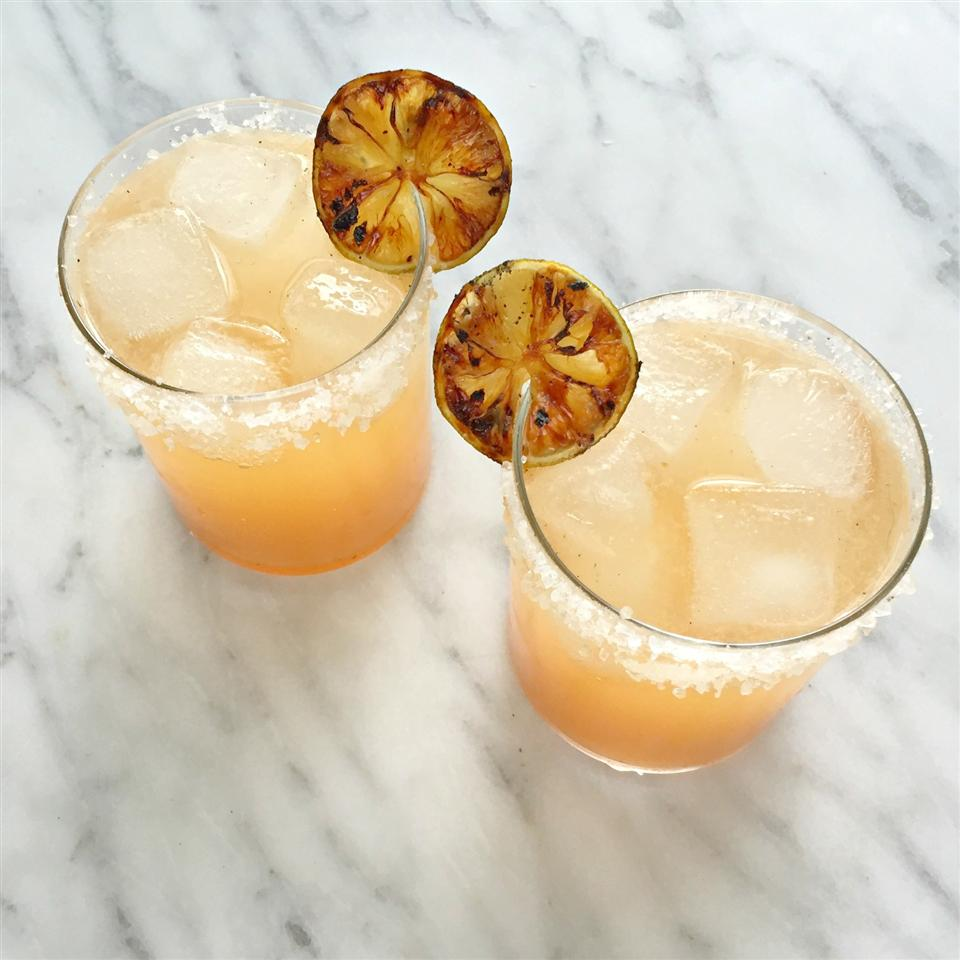

Grilled Grapefruit Paloma Cocktail
Prep Time
: 10 Minutes
Yeild
: 4
Ingredients
2 limes
¼ cup white sugar
1 red grapefruit, halved widthwise
¼ cup kosher salt
1 cup ice cubes, or as needed
2 tablespoons simple syrup, or to taste
4 fluid ounces club soda
Steps
Blend half of strawberries, 1/4 tsp. vanilla, 1 cup ice cream and 2 Tbsp. milk in blender until smooth.
Pour into 2 glasses. Repeat with remaining strawberries, vanilla, ice cream and milk. Serve immediately.